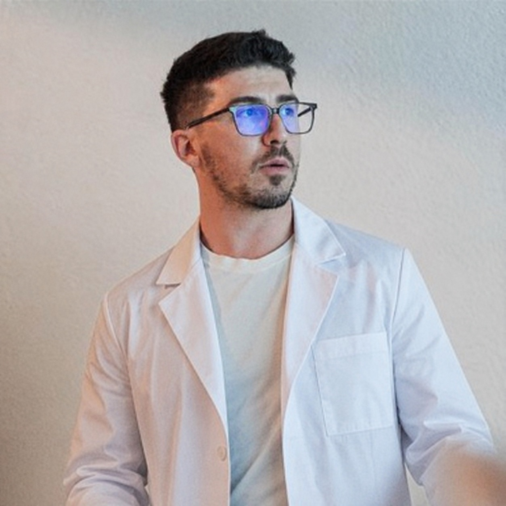
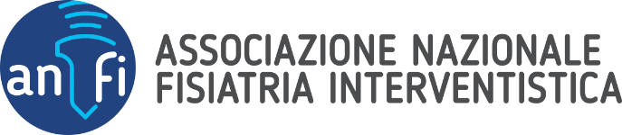

Fisiatria interventistica · Ecografia muscoloscheletrica
Comprendere la patologia. Costruire insieme il percorso.
Integro valutazione clinica, ecografia e procedure interventistiche nel percorso riabilitativo, coinvolgendo il paziente nelle decisioni.

Prestazioni principali
Visita, ecografia e procedure.
Valuto indicazione e obiettivo di ogni trattamento in base alla diagnosi e al percorso della singola persona.
Visita fisiatrica
Una valutazione completa per comprendere la patologia, gli esami già svolti e le possibili strategie.
Ecografia muscoloscheletrica
Un esame dinamico disponibile come prestazione autonoma o a completamento della visita quando indicato.
Infiltrazioni ecoguidate
Procedure endoarticolari ecoguidate con steroide o acido ialuronico, dopo un'attenta selezione clinica.
Onde d'urto focali
Trattamento inserito in un percorso che considera diagnosi, carichi, esercizio e tempi biologici.
Elettrolisi percutanea ecoguidata
Procedura mini-invasiva per tendinopatie selezionate, integrata con esercizio terapeutico e gestione progressiva dei carichi.
Patologie
Una guida per distretto corporeo.
Dolore, rigidità e perdita di forza possono avere origini diverse. Ho raccolto i principali quadri clinici che valuto durante la visita.
Consulta tutte le patologie →Il metodo
Come si svolge la visita.
Ricostruisco la storia clinica, eseguo l’esame obiettivo, valuto referti e immagini e discuto con il paziente diagnosi e alternative.
Scopri come si svolge la visitaAscolto il racconto e ricostruisco la storia clinica attraverso il dialogo.
Valuto movimento, funzione e segni clinici continuando a confrontarmi con il paziente.
Approfondisco con ecografia, referti e immagini quando possono rispondere a una domanda precisa.
Condivido ciò che ho compreso, le alternative e il percorso da costruire.
Dove ricevo
Quattro sedi in Sicilia.
Le prestazioni possono essere prenotate attraverso MioDottore. Disponibilità e dettagli aggiornati restano sempre consultabili sul profilo.

Opinioni dei pazienti
Esperienze raccolte e pubblicate su MioDottore.
Attenzione durante la visita, spiegazioni dettagliate e puntualità sono gli aspetti più menzionati dai pazienti su MioDottore.
Leggi tutte le recensioniContenuto e criteri di pubblicazione delle recensioni sono gestiti da MioDottore. Il widget viene caricato automaticamente; aprendo il profilo o interagendo con il riquadro si prosegue sul servizio esterno. Come vengono trattati i dati.
Aggiornamento e formazione
Formazione in ecografia e fisiatria interventistica.

Sono membro del Consiglio Direttivo ANFI e partecipo come organizzatore, docente e tutor alla Scuola di Ecografia Muscoloscheletrica. Il confronto con altri medici e l’attività congressuale mantengono metodo e pratica in dialogo costante con le evidenze scientifiche.
Il mio impegno nella formazione medicaIl prossimo passo